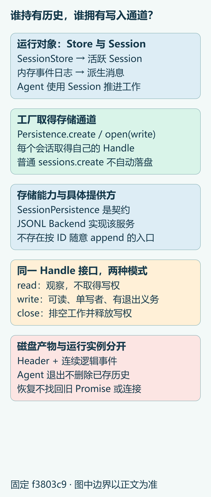
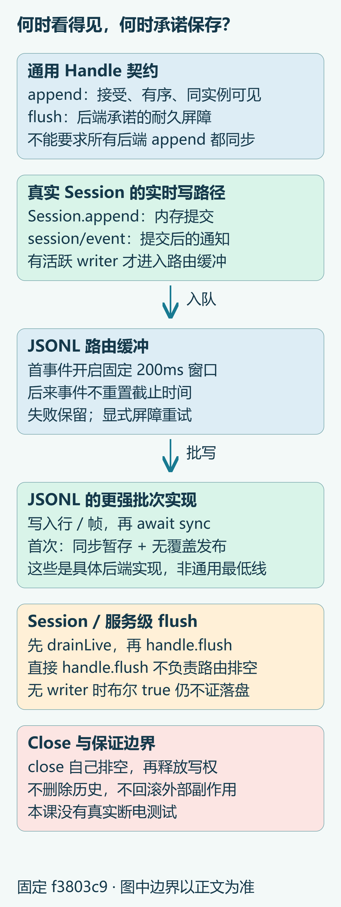
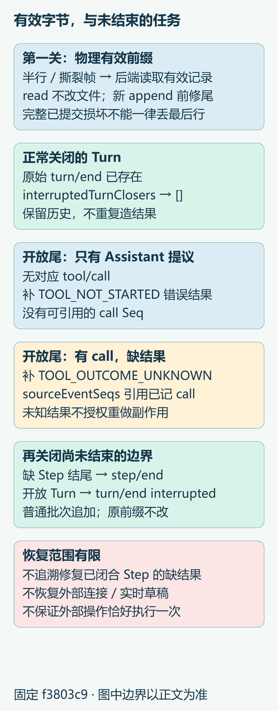
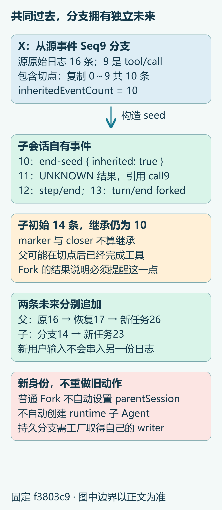

H18 作者审阅页 · 未发布。实际 LessonMarkdown 的静态渲染，折叠答案可展开；课程版本的复制交互已另经 React 挂载测试。图片在本页映射为相邻文件，不改变教材的 /course-media 路径。
Session 持久化、恢复与 Fork：如何可靠延续 Agent 的历史？
260～350 分钟（分三段：句柄与落盘80～105、恢复85～115、Fork与综合95～130；作者估算，环境另计，待试读）
昨天的任务结束了，今天怎样接着做？
代码研究 Agent 已接收“读取 README、检查测试、汇总结构”，完成模型请求、工具结果和最终回答。H17证明，同一份事件前缀能够重建模型消息、请求头和任务投影。现在关掉应用，再打开：昨天那个 JavaScript 对象已经不存在，事件应该从哪里来？
更棘手的是应用中途退出：内存刚接纳的消息是否已经存储？文件末尾只写了一半怎么办？文件完整，但有 turn/start 没有 turn/end，又该怎么办？工具可能已经改过外部系统，却没有结果记录，恢复时能否直接再做一次？如果用户想从工具调用之前试另一条路线，如何保留共同过去而互不改写未来？
本课的核心产物是一份可以解释的“保存→关闭→恢复→分支”轨迹。我们先处理谁拥有读写通道，再观察真实文件，最后推导恢复与 Fork。不会以存储接口清单代替这些工程问题。
官方继续固定 Commit f3803c96974ad4a94195fb97e5c637e9c2a3afe3，Harness 0.2.2-alpha.2。实验使用 Node24、Windows、真实 JSONL、真实 Session/AgentLoop；模型为脚本 Adapter，工具只算2+3，不调用付费模型、网络业务或 Shell。真实磁盘不等于完整应用E，也不等于已经通过断电、所有文件系统和所有平台测试。
蓝图原估110～150分钟；正式稿加入四实践、压缩/跨进程/尾部验证与真实局部综合，作者估260～350分钟，增加150～200分钟，尚未实测。第一段到正常重读暂停，第二段到工具恢复暂停，第三段完成 Fork 和综合。每段都有合上代码后的产出，环境准备不计课时。
先从 H17 带来六件已有事实
用6分钟复述：Session日志仅追加；Surface替换不删旧事件；session.seq是日志长度；assistant/message是已结算消息，assistant/attempt不自动变成模型历史；tool/call与tool/result需要关联；Session.append成功只证明内存接纳。H09还区分Agent与Session，H10给Turn/Step边界，H12区分实时流与结算。
旧Stage 4的Run/Step刷新回读也解决“页面刷新不能丢任务”，但使用的是业务表，不是同一套Session存储。可选复习Stage 4.6；以上回顾已自足，无需旧课权限。JavaScript的await等待异步动作，try/finally承担本次资源收尾，不能自动回滚外部副作用。
先写一行预测：await agent.whenIdle()之后应用退出，能保证重启看到最后回答吗？只有知道挂载了哪个后端、写句柄由谁取得、路由缓冲是否排空、耐久屏障是否成功，才能作答。运行空闲不是存储证明。
五层对象：历史、活对象、服务与通道
把会议记录比作事件日志，当前拿着记录继续讨论的人比作Agent，可以帮助区分历史与活对象。类比到此为止：会议室设备不会因重新读记录而复活，数据库事务保证也不会由比喻产生。
| 名称 | 人话与职责 | 在本课怎样取证 |
|---|---|---|
| SessionEventLog | 已提交事实的逻辑历史；概念称呼，并非新造的可new类 | 读取到连续Seq的事件前缀 |
| Session | 当前进程管理日志与派生读模型的对象 | deriveMessages、header、seq |
| SessionStore | ctx.sessions，管理当前活跃Session | create/prepare/get/fork；不充当全部磁盘历史目录 |
| SessionPersistence | ctx.sessionPersistence，存储能力契约 | create/open/stat/list/flush |
| SessionHandle | 针对一份已存Session的读写通道与写所有权载体 | read/append/flush/close |
JSONL Backend是最后两层的具体提供方。SessionPersistence存储对应的逻辑事件与必要元数据，没有另建一份独立权威聊天列表。SessionHeader仍在事件日志之外；磁盘有一行Header，也不能把它算成seq0事件。SessionPersistence、SessionHandle / SessionAccess。
为什么分开？AgentLoop只需取得受控句柄，读取逻辑事件，不应自己遍历文件、选择压缩编码或覆盖尾部。其他后端可以实现相同可观察契约，但必须说明自己的耐久与跨进程保证；接口相同不是实现已经合格的证据。
图一先找“谁打开通道”，再找“谁关闭”。框表示同进程职责对象与存储产物，没有默认画成多个服务进程。

服务寻址会话，句柄读写日志
真实服务支持create、open、stat、list及服务级flush。create(header)创建新的存储身份并取得write句柄；open(id,'read')观察已有身份，open(id,'write')取得现有日志的单写者权。stat只观察元数据、修订号与可选位置，list列可见会话，顺序不保证。JsonlSessionPersistence.create、JsonlSessionPersistence.open、stat / list。
下面是正式接口的小片段，ctx须已经挂好SessionStore和JSONL；完整装配在实践准备。它不运行Agent：
const writer = await ctx.sessionPersistence.create(header);
try {
await writer.append(events);
await writer.flush();
const { eventState, events: saved } = await writer.read(0);
console.log(eventState, saved.length);
} finally {
await writer.close();
}不要改写成不存在的sessionPersistence.append(id,events)或load(id)。句柄把本次访问模式、日志进度、修改排序与结束责任绑在一起；直接对任意文件追加文本跳过了这些约束。
SessionHandle：同一接口，两种访问模式
SessionAccess只有read与write。write包含读取能力；read不持有写权。它们使用同一个SessionHandle接口，TypeScript没有替你拆成两种完全不同的对象；修改时由运行时访问模式拒绝。SessionHandle / SessionAccess、访问与生命周期错误。
| 动作 | 本版本的精确含义 | 关键拒绝或限制 |
|---|---|---|
| read(offset?,length?) | 返回合法连续日志的一段；默认从0到尾 | 非负安全整数；结尾或越过结尾为空；闭句柄先拒绝 |
| append(events) | 批次第一Seq等于存储next-seq，整个批次连续 | read句柄拒绝；无损JSON快照；不允许覆盖旧Seq |
| flush() | 耐久屏障，必要时实体化空会话 | read句柄拒绝；失败不能当已保存 |
| close() | 释放通道；写句柄排空已路由工作并释放写权 | 幂等、异步、不可取消；同一关闭Promise可再次等待 |
read返回{eventState,events}，外层数组属于调用方。detached说明事件值独占，shared-frozen说明可能与缓存共享但已深冻结；空slice仍保留生产者的状态标签。想修改数据需先克隆。相同句柄重复读不退回更短历史；一次append/flush完成后，同一后端实例上随后开始的读取至少看到该前缀。并发读取只承诺合法前缀，不给任意时序推断。SessionHandleReadResult / read、JsonlSessionHandle.append / flush。
SessionReadOnlyError表示访问模式拒绝，SessionAlreadyOwnedError表示写权被占用，SessionHandleClosedError表示该通道已开始关闭。关闭后即使参数也不合法，仍先按已关闭拒绝。SessionId可相同，旧writer与后来新开的writer仍是不同句柄生命周期。
SessionOwnershipLostError是跨后端契约中的永久失权错误：关闭再重新打开，旧句柄不应自行夺回。固定JSONL用内核锁，不做“超时抢走活写者”的租约续期；当前路径并不实际抛这个失权类，不能看到类名就想象出心跳配置。SessionOwnershipLostError。
close不是丢掉引用。JSONL先排空路由缓冲，等待修改链收束，再释放租约与进程内认领；排空或释放失败仍尝试收回记账并拒绝，多个失败可聚合。正常AgentHandle.dispose则先等工作静止、撤Scope，再关闭写句柄，最后移除实时登记；历史产物不会因Agent消失而被删除。JsonlSessionHandle.close、initializeAgent teardown。
一个日志，为什么只能有一个写入者？
假设A、B都认为当前长度是10，分别把不同事实写成seq10。读取时无法用一个连续序列同时解释二者；只比较字符串SessionId并不能协调它们的进度。单写者把“谁可以改变这份日志”收敛到一个拥有者，读者则可并行观察。
seam要求同一后端实例内排除第二写者。JSONL还在不同实例/进程间加内核锁：已有产物write-open立即取得；新建会话在第一次实体化之前取得。未实体化空会话没有物理产物，不能宣称create瞬间就有跨进程锁。进程内claim和物理锁是两层，别合成一个“Map保证跨进程”的故事。JsonlBackendTracker、SessionWriteLease.acquire / release。
POSIX路径用session.lock上的非阻塞flock，关闭描述符释放；Windows用从规范路径派生的命名内核信号量，没有锁文件。活着但卡住的写者仍持权，不存在任意过期抢占；进程退出可释放内核资源。Windows名字按登录会话隔离，POSIX部分网络文件系统也有局限。本课真实跨进程实验只覆盖同一Windows登录会话；没有运行Linux/macOS、跨登录会话或NFS。acquireLockHandleWin32 / releaseLockHandleWin32。
只读打开不拿写权，能与写者并存。实践中的子进程先读成功、写打开拒绝；原写者close后子进程可写；另一个测试子进程持锁时主进程拒绝，终止这个本次新建且PID已记录的测试进程后主进程重新取得写权。它证明进程退出路径，不能当作磁盘断电恢复试验。
四个时刻：内存、可见、物理写入与耐久
H17的Session.append提交内存事实，发布session/event。JSONL监听器把有活跃写句柄的事件复制进write-behind（延后批写）缓冲；第一条开启固定200ms窗口，后来事件不重置截止时间。这是内部调度常量，没有名为batchDelay的公开配置。Session.append / commit、enqueueLive / drainBuffered、JsonlBackendTracker.install。
必须把下列保证分开：
| 时刻 | 可以说什么 | 还不能说什么 |
|---|---|---|
| Session.append返回 | 内存接受事实，观察者可收到 | 后端已经接收、磁盘已经同步 |
| 通用handle.append完成 | 后端接受、有序；同实例后来读取至少见此前缀 | 所有第三方后端都已fsync |
| 物理字节写入 | 文件上出现数据 | 未经同步的字节一定抗崩溃 |
| handle.flush完成 | 在该后端承诺及部署条件下，确认追加耐久并实体化 | 外部工具副作用恰好执行一次、所有硬件故障都可恢复 |
JSONL更强的实现不能倒推成seam最低要求。 它首次写入使用同步临时文件与无覆盖发布；以后每批writeFile后await sync，再返回。捕获写入/同步失败时尝试回滚到之前字节长度，回滚也失败会聚合错误。这些是锁定实现分支；本课做真实往返，没有模拟电源断开，也未动态覆盖每个fsync故障。persistBatch / persistHeader / truncateTornTail、materialize / writeSyncedTempFile、appendLines / rollbackAppend / repair。
图二上方是通用保证，下方才是具体JSONL路径。先找等待的是哪个Promise，再找下一条能够据此成立的结论。

三个flush入口，先找拥有者
直接操作自己取得的writer，用await writer.flush()；操作活跃Session，用await ctx.sessions.flush(session)等待全部session/flush监听者；需要后端所有活跃writer的屏障，用await ctx.sessionPersistence.flush()。JSONL的后两条路径会先排空已路由事件，再执行句柄flush。服务级失败按会话聚合，其他writer继续尝试，读句柄不参与。JsonlBackendTracker.flushAll、SessionStore.flush。
直接handle.flush处理句柄已确认的追加与必要实体化；它的JSONL实现本身不调用drainLive。持有Session而想把路由缓冲也纳入屏障时，应走SessionStore或服务级入口，不能只盯住一个同名flush。close则自己排空路由工作。JsonlSessionHandle.append / flush、JsonlSessionHandle.close、JsonlBackendTracker.install。
没有持久化监听器时Store.flush返回false。已经挂载后端但没有对应活跃writer时，也没有任何事件被该后端存储；布尔true仍可能只代表监听者存在。buffer实验实际关writer后再追加第3条内存消息，Store.flush返回true，磁盘仍只有前2条。不能把布尔值当落盘认证，更不能只用sessions.create就宣称已经保存。Agent工厂是正式取得writer的入口之一。JsonlBackendTracker.install、createStoredSession / createAgent。
后台排空失败会保留批次、暂停自动路径并记录错误；下一次显式flush重试，再失败就拒绝。buffer实践只在本次实例persistBatch边界注入故障，保留原方法供恢复后调用；它证明路由保留与错误传播，不冒称真实磁盘同步失败或任何第三方后端都这样重试。
磁盘上保存的究竟是什么？
后端配置只有必填root、compression与listConcurrency等锁定公开字段。root没有默认值，避免当前进程工作目录变化悄悄把历史分散；实验root始终由runner新建，与个人Harness Home、项目数据库无关。cwd是SessionHeader中可选的项目目录，用于组织产物，不是把实际项目内容复制进去。Config / Config schema。
原始布局示意为root / 项目目录 / 编码后的SessionId / session.v4.jsonl。无cwd时项目目录是_no-cwd。SessionId逐UTF-16单元转义为安全单段，抵消分隔符、遍历等；项目目录名为了可读而替换/截断，不能把它当全局唯一身份。最终仍以header中的会话身份及实际存储检查为准。encodeSegment / projectDir / logPath。
当前逻辑格式是SESSION_FORMAT_VERSION=4，当前写目标也是session.v4文件。 文件名的v3表示一个物理历史generation，不足以说明open返回的逻辑对象仍是V3：本课historical测试的源是session.v3.jsonl，只读open返回header.version=4，源字节不变且不发布新文件。不是两套数字永远不同，而是要问你看的是源产物、迁移后逻辑值还是当前写目标。HeaderLine / toHeaderLine / fromHeaderLine、generationLogFilename / parseGenerationLogFilename、SESSION_FORMAT_VERSION。
非压缩格式是Header行加每事件一行；物理Header还包含type标记等编码字段，不必逐字等于逻辑Header对象。sourceEventSeqs可用无损区间形式存储，读取展开回精确数组，因此物理行表示和内存JSON也不必逐字符相同。HeaderLine / toHeaderLine / fromHeaderLine、eventLines。
默认compression为zstd，产物以.jsonl.zstd结尾。它是标准拼接的带校验和Zstandard帧：一帧Header，后面按持久批次成帧。不能用“文件名含jsonl”推断可直接按文本打开。想观察明文，请在新的独立root使用官方compression:'none'；一个root只属于一种编码，改变配置不等于转换原有文件。scanZstdFrames / compressZstdFrame / decompressZstdFrame。
stat/list可以给已实体化产物location及sizeBytes，但不通过读取全部正文来证明语义完整。revision是不透明的、仅能在同一后端实例与同一SessionId间比较的变更令牌：相等可当日志未变，不等不作更多承诺，换writer不应改变它。它不参与open/read/resume的安全或恢复决定，也不是事件Seq。stat / list、SessionPersistence.stat revision。
空会话：此处看得见，别处可能还没有
JSONL create完成后，当前后端的stat/list/open即可看到pending会话，location仍缺省；另一个后端实例还看不到物理文件。第一批append会实体化；显式空writer.flush也可把Header持久发布。若空会话从未实体化就close，JSONL移除pending记账，不会为了关闭凭空留下文件。JsonlSessionPersistence.create、JsonlSessionHandle.close。
这个优化不表示create已经跨进程可读，也不表示“空会话不值得保存”。是否把空会话建立成持久身份，由拥有者的检查点需求决定。empty实践分别验证本地可见、其他实例找不到、关闭丢弃pending，以及新建后flush使另一实例读到空日志。
正常重读，不等于找回昨天那个Agent
实践B先直接操作Handle：新根、合法事件、append/flush、关闭句柄与后端，再新建后端读取。读取的Header与事件顺序完全一致，用它们重建Session，deriveMessages也一致。随后独立Node进程再读同一产物，核PID、Header和每条事件。原始与默认压缩各自完成这条闭环。
这叫历史重建；没有模型或工具被重新执行。Session.create/恢复准备会按条件追加生命周期的session/end-seed，不能用“对象日志总长永远不变”作为恢复成功标准。应先比较原有前缀，再单独解释新增标记。恢复原Agent引用、原Promise、登录连接和OS权限均不是该流程的产物。Session constructor seed marker。
ctx.agents.create({sessionId,...})准备新身份；ctx.agents.resume({resumeSessionId,...})要求已存身份与后端，并创建新的运行实例。resume不是get的别名，也不能在旧活跃writer仍占用时擅自修复它。createStoredSession / createAgent、AgentLoop.resume / resumeWith。
把resume按输入、处理、输出、失败读完
输入是已有持久ID及本次运行选项。工厂先open(write)取得写权，read获得合法逻辑历史，再计算interruptedTurnClosers。必要closer通过同一writer作为普通批次追加，然后把已存事件、closer、Header、inheritedEventCount及eventState交给SessionStore.prepare。SessionPreparation拥有确切未发布对象，在发布或回滚后同步幂等dispose；不是磁盘事务本身。SessionStore.prepare、SessionPreparation、AgentLoop.resume / resumeWith。
工厂补存构造器产生的未存后缀，再进入H09的共同初始化：安装Scope与生命周期责任，Session进入Store并完成同步创建通知，等待setup/commit，Agent进入Registry并等待创建通知，最后放行工作。输出是新AgentHandle，拥有关闭入口。不能省略“修复已写入，运行对象尚未发布”的窗口；后续setup失败也不会让已存事实消失。appendUnstoredSuffix、initializeAgent teardown。
加载或发布失败时，按取得到哪一步释放准备与句柄；取消可与open/read竞赛，迟到句柄也需关闭。完整失败矩阵在H09已有局部证据，本课动态验证真实JSONL的正常resume、开放尾修复、冲突与继续Turn；不宣称所有后端异常组合已经重跑。
历史请求头用于解释旧请求；下一次模型调用会按当前运行组合组装Prompt、路由和工具。本课X在发送新输入之前对比恢复前后的消息与requestHeader，发送之后保留新的真实Adapter输入，不能据此保证任何自定义Adapter的私有缓存或外部连接自动恢复。
文件尾写了一半，与Turn没结束是两件事
先把两种输入摆在桌上。
物理不完整： 文件最后是一段没有换行结束的JSON碎片，或一个未写完整的压缩帧。后端只能向读取方暴露有效记录前缀；第一次新append前，写路径处理撕裂字节。读操作不偷偷修文件。SessionLogScanner / scanLog、readStoredLog / decodeStoredLog。
语义未完成： turn/start、step/start、assistant/message和tool/call都完整存储，最后没有tool/result或turn/end。这些事实完全可能是崩溃前已经确认的历史，不能因为Turn开放就把它当坏字节删掉。JSONL返回有效日志，Agent恢复层补齐必要语义边界。
原始尾部实验往本次新文件追加半截文本，读仍得到原5事件且文件字节不变；write-open本身也不修改，第一条新append之后才移除尾碎片并继续Seq。压缩实验让一帧只缺最后一个校验和字节，其中完整解码的事件仍可恢复，下一append先重写这些记录再追加。撕裂帧不总等于整帧事件全部丢弃。 已完整提交帧的校验和/结构错误则应拒绝，不推广成“任意坏数据删最后一行即可”。readStoredLog / decodeStoredLog、validateStoredEvents。
本课只在新临时产物构造损坏，没有截断用户文件，也没有杀死真实业务写入。物理Fixture证明指定撕裂形式；真实机器断电、文件系统缓存损坏、所有Zstd故障组合仍未验证。
图三按左右两条独立路径看：完整Turn无需补写；开放Turn先检查工具，再关闭Step/Turn。它不是“恢复时全部重跑”的流程图。

合成结果：没启动记录，与结果未知不同
ToolCallRecovery先观察assistant/message中的tool-call块，再记录匹配tool/call的位置，遇到相同Turn/Step的append结果才移除待答项。闭合的Step与Turn会清掉当前待答集合，所以它只修开放尾部，不会回头为先前已闭合步骤缺失的结果补造历史。ToolCallRecovery / CLOSER_TEXT。
| 继承/恢复前缀中的证据 | 合成错误 | 为什么不能合并 |
|---|---|---|
| Assistant已提出工具，但无tool/call | TOOL_NOT_STARTED | 没有记录调度已接手；不等于对整个外部世界作未执行证明 |
| 有tool/call，无匹配结果 | TOOL_OUTCOME_UNKNOWN | 已记录开始，结果未耐久记录；副作用可能已发生 |
| 已有匹配tool/result | 不合成该项结果 | 不能覆盖或重复已知结果 |
恢复得到的tool/result带isError=true；unknown结果的sourceEventSeqs引用已记call，未启动项没有可以引用的call。结果按Assistant提议顺序补齐，再有开放step/end，最后turn/end reason=interrupted。Seq接前缀，时间复用最后事件，合成消息身份可确定；原事件不改。openTurnClosers / interruptedTurnClosers、ToolCallRecovery / CLOSER_TEXT。
例：C_unknown原事件为0 turn/start、1 step/start、2 user/message、3 assistant工具提议、4 tool/call。修复后追加5 tool/result（UNKNOWN，引用4）、6 step/end、7 turn/end interrupted。再次计算closer为空；再追加seq8的turn/start可继续新工作。这个组件夹具省略Prompt，实际Loop恢复夹具另有受保护system首节点，不能把两套Seq混在一起。
如果call是转账，结果未知时重发可能重复转账。恢复机制不执行工具，只写“记录中不知道结果”的保守事实。是否继续要看只读性、幂等键、外部核对和实际授权；H20再深入重试策略。本课sum是纯计算，但测试仍要求恢复时旧工具执行次数为0，防止把安全替身的可重复性误当系统默认重放行为。
Fork：共同过去，独立未来
用户想“从调用工具之前换一种实现”。Fork把源Session的某个包含切点的事件前缀作为新会话的过去，之后用新的身份追加未来。它不是改写源Session，也不调用旧模型、重跑旧工具或创建运行时子Agent。
真实签名为ctx.sessions.fork(source,boundary?,childSessionId?)。source必须是当前Store中的确切活实例或其ID；显式boundary必须是已有、连续的非负安全整数Seq，含该事件；省略取当前最后一个事件，空源省略切点则继承0条。只传一个Offset长度当包含Seq会多取一条或越界。SessionStore.fork / _forkBoundary / _resolveForkSource。
buildForkSeed复制到boundary，先放session/end-seed {inherited:true}，再按forked原因补开放尾部。inheritedEventCount=boundary+1只数源事件，标记、错误结果和结束边界都是子会话自有事件。isSeeded标明有Fork历史，不是精确数字；标记与独立存储元数据共同保留切点。buildForkSeed、Session constructor seed marker。
先用综合X的真实轨迹手算：源日志原16事件，seq9是tool/call。Fork含0～9共10条，seq10是继承标记，11是未知工具结果，12 step/end，13 turn/end forked，故新分支初始14条。父会话后来补了结果，不会自动回填分支；分支描述的是切点内的证据。

开放Turn也能Fork，但不是任意畸形日志都能
固定文档docs/subsystems/session.zh.md:692有一句“API拒绝结束于开放轮次内的前缀”，与同页690、实际SessionStore.fork/buildForkSeed及官方Fork测试冲突。本课采用锁定实现与实际D/X验证的规则：合法已提交前缀可以切在开放Turn内，合成闭合开放尾部。差异原文、来源、测试状态单列，不回写上游或旧蓝图掩盖它。Fork说明冲突。
若切在Assistant提议之后、call之前，子分支产生NOT_STARTED；若切在call之后、result之前，产生UNKNOWN。两种Fork文本都会提醒：父会话可能在切点之后已经执行或完成该调用。Fork的NOT_STARTED不能直接照搬崩溃恢复的“需要时重试”口吻；错误码相同，原因、面向模型的说明和turn/end reason不同。Fork是forked，崩溃恢复是interrupted。openTurnClosers / interruptedTurnClosers、ToolCallRecovery / CLOSER_TEXT、buildForkSeed。
若切在已关闭Step之后、Turn仍开放，只补Turn；若Turn已闭合，不额外补结束。插件自己的compaction/start等括号由插件解释，不被核心repair一并“修好”。API会核身份与切点、构造会话会核事件/Surface，不能因此承诺任意伪造生命周期都可安全Fork。D还核错误边界、重复子ID、空源和父子未来。
parentSession与parentAgent，别用一个“父级”代替
当前普通sessions.fork只继承cwd并设isSeeded与精确cut，不自动设置parentSession或origin。README提到历史普通Fork可能保留parentSession，是历史数据说明，不能当成本次API行为。SessionHeader.parentSession用于持久谱系，origin等还帮助子代理分类；这些字段也不证明当前活跃Agent的父对象存在。SessionStore.fork / _forkBoundary / _resolveForkSource、SessionHeader。
运行时parentAgent由创建选项显式传入，Registry按确切对象登记owner；AgentHandle携带释放入口，调用方Fiber与工厂另有退出责任。X分支没有parentAgent，所以它是运行时root。Fork共享过去，不自动继承父Agent的取消树、浏览器、后台进程或连接；完整Subagent协议留H21。AgentRegistry.enter / owner。
普通sessions.fork只创建活跃内存Session，不会自动创建持久writer或Agent。X先用它核对派生结果，再把同一官方buildForkSeed的seed及精确cut交给agents.create，让工厂获得新身份的writer。不能把这个接线藏掉，声称“调用Fork就已经把新分支落盘”。
兼容性：损坏、未知格式与迁移
当前SESSION_FORMAT_VERSION为4；格式catalog决定支持哪些历史转换链。当前结构损坏抛SessionPersistenceCorruptionError；无法忠实解释的版本或必需事件抛SessionFormatUnsupportedError。未来合法格式可能结构与本构建不同，应提示升级，不能先猜一套旧结构再把它误判损坏。validateStoredEvents、格式错误分类 / sessionFormatVersionRefusal、SESSION_FORMAT_VERSION。
JSONL选数值最高的规范generation。即使有较旧可读文件，更高未来generation也不能被静默绕过。historical实践只读V3源、得到V4逻辑值，源与目录文件集合不变；写打开的实现则先持写claim/lease，再迁移准备、校验并排他发布新current generation，原源不原地覆盖。本课没有执行写迁移Worker与完整迁移矩阵，这部分是静态源码/官方测试选读，不能拿只读迁移通过给它补PASS。历史open的读写分支、publishStoredMigration。
当前未知事件带ignorable:true可以保留为不认识的仅日志事实；未知必需事件拒绝。这个例外不能无限推广到所有历史格式：v0/v1/v2历史迁移对未知词汇更严格。没有认识事件含义就不能让它改变Surface，更不能用ignorable藏掉必需控制事实。validateStoredEvents、历史格式与ignorable范围。
本课安全Fixture另验未来版本、Seq损坏、未知必需与当前可忽略事件，均是新文件；未对旧课程、旧缓存产物或真实用户会话执行迁移。格式判断也不提供恢复外部副作用的保证。
先预测，再运行四项实践
在仓库根使用本课runner，Node需24，Python用于源核对与图。runner先按固定Git blob/SHA256核源码，再核所有直接/传递依赖的精确版本与integrity；复制lab到全新临时目录，隔离环境，保留每次args、exit、stdout/stderr与程序hash。默认不花API费用。换机准备与锚点见lab/README和作者交付README。
node docs/deepseek-harness-v2/h18/scripts/run-labs.mjs
node docs/deepseek-harness-v2/h18/scripts/run-labs.mjs A
node docs/deepseek-harness-v2/h18/scripts/run-labs.mjs B
node docs/deepseek-harness-v2/h18/scripts/run-labs.mjs C
node docs/deepseek-harness-v2/h18/scripts/run-labs.mjs D
node docs/deepseek-harness-v2/h18/scripts/run-labs.mjs X运行器不访问个人Home、真实DSH_HOME值或项目数据库。递归删除守卫也覆盖上游异常清理分支；练习只对关闭后的本次已知文件执行一次unlink，保留空目录，综合与部分故障产物保留供审查。没有枚举后批量删除、目录递归清理或失败后清扫旧目录；这些保留项是工作区文件规则下的明确例外，不冒称全部临时根已删除。
想深入再看：公共准备完整程序
import assert from 'node:assert/strict';
import {Context} from '@deepseek-ai/cordis';
import SessionStore,{Session,SessionId,SessionSeq,SessionLogOffset,SESSION_FORMAT_VERSION,interruptedTurnClosers} from '@deepseek-ai/dsh-session';
import type {SessionEvent,SessionHeader} from '@deepseek-ai/dsh-session';
import * as Jsonl from '@deepseek-ai/dsh-session-persistence-jsonl';
import {createUserMessage,createAssistantMessage,ToolCallId} from '@deepseek-ai/dsh-llm';
import {mkdir,mkdtemp,readFile,stat,unlink} from 'node:fs/promises';
import {resolve,relative,isAbsolute} from 'node:path';
export {assert,Context,SessionStore,Session,SessionId,SessionSeq,SessionLogOffset,SESSION_FORMAT_VERSION,interruptedTurnClosers,ToolCallId,createAssistantMessage,readFile};
export type {SessionEvent,SessionHeader};
export const user=(text:string)=>createUserMessage({source:{kind:'user'},content:[{type:'text',text}]});
export const header=(id:string):SessionHeader=>({id:SessionId(id),version:SESSION_FORMAT_VERSION,createdAt:0,isSeeded:false,delegationDepth:0});
export function events(kind:'closed'|'open'|'not-started'|'unknown'='closed'):SessionEvent[]{
const s=Session.create(SessionId('event-maker'));const out:SessionEvent[]=[];
const add=(...args:any[])=>{const e=Reflect.apply(s.append,s,args);const copy=structuredClone(e);copy.time=1000+copy.seq;out.push(copy);};
add('turn/start',{turn:1});add('step/start',{turn:1,step:1});
add('user/message',user('计算 2 + 3'),{surfaceOp:'append'});
if(kind==='not-started'||kind==='unknown'){
const message=createAssistantMessage({source:{provider:'fixture',model:'scripted'},content:[{type:'tool-call',id:ToolCallId('sum'),name:'sum',arguments:'{"a":2,"b":3}'}]});
add('assistant/message',{turn:1,step:1,message,stream:[]},{surfaceOp:'append'});
if(kind==='unknown')add('tool/call',{turn:1,step:1,callId:ToolCallId('sum'),name:'sum',arguments:'{"a":2,"b":3}'});
}
if(kind==='closed'){add('step/end',{turn:1,step:1});add('turn/end',{turn:1,reason:{kind:'completed'}});}
return out;
}
export async function freshRoot(label:string){
const base=process.env.H18_RUN_ROOT;assert.ok(base,'run through the H18 runner');
const root=await mkdtemp(resolve(base,'h18-'+label+'-'));
return root;
}
export async function backend(root:string,compression:'none'|'zstd'|'default'='none'){
const ctx=new Context();await ctx.plugin(SessionStore);await ctx.plugin(Jsonl,{root,...compression==='default'?{}:{compression}});
return {ctx,store:ctx.sessionPersistence,close:()=>ctx.fiber.dispose()};
}
export async function removeOne(root:string,path:string){
// 只删本次已知产物这个明确文件；不枚举删除、不删除目录。
const rel=relative(root,path);assert.ok(rel&&!rel.startsWith('..')&&!isAbsolute(rel));
assert.ok((await stat(path)).isFile());await unlink(path);return path;
}
export const messageSummary=(s:Session)=>s.deriveMessages().map(m=>({role:m.role,content:m.content}));
export async function ensureParent(path:string){await mkdir(resolve(path,'..'),{recursive:true});}想深入再看：隔离依赖与删除守卫完整程序
// 依赖锚点均由作者 runner 按固定上游 lock 完整核验。
import fs from 'node:fs';
import {registerHooks, createRequire, syncBuiltinESMExports} from 'node:module';
import {pathToFileURL} from 'node:url';
const dep=createRequire(pathToFileURL(process.env.H18_DEPS_ANCHOR));
const zod=createRequire(pathToFileURL(process.env.H18_ZOD_ANCHOR));
const native=createRequire(pathToFileURL(process.env.H18_NATIVE_ANCHOR));
const limit=createRequire(pathToFileURL(process.env.H18_LIMIT_ANCHOR));
const entries=new Map(['js-yaml','@eslint-community/regexpp','ajv','node-addon-require-builtin','resolve.exports','semver']
.map(name=>[name,pathToFileURL(dep.resolve(name)).href]));
entries.set('zod',pathToFileURL(zod.resolve('zod')).href);
entries.set('koffi',pathToFileURL(native.resolve('koffi')).href);
entries.set('p-limit',pathToFileURL(limit.resolve('p-limit')).href);
entries.set('@js-temporal/polyfill',pathToFileURL(limit.resolve('@js-temporal/polyfill')).href);
registerHooks({resolve(specifier,context,next){return next(entries.get(specifier)??specifier,context);}});
// 用户禁止批量/递归删除；包括上游异常清理路径也不准执行递归 rm。
const rm=fs.promises.rm;
fs.promises.rm=async(path,options)=>{
if(options?.recursive)throw Error('H18 safety guard: recursive removal forbidden');
return rm(path,options);
};
syncBuiltinESMExports();实践 A：谁可以写，何时必须关闭？
输入是新根、Header与5条合法事件。先预测create后本实例stat/list，read和第二write打开，分两批0～2及3～4写入，故意从4跳过3会怎样；再预测read句柄修改、关闭后操作和重复close。运行后交模式/错误/Seq三列表，不只交“PASS”。
想深入再看：实践 A 完整程序
import {SessionAlreadyExistsError,SessionAlreadyOwnedError,SessionReadOnlyError,SessionHandleClosedError} from '@deepseek-ai/dsh-session-persistence';
import {assert,backend,freshRoot,header,events,SessionId,removeOne} from './support.ts';
export async function handlePractice(){
const root=await freshRoot('A'),f=await backend(root),h=header('h18-A'),log=events();
try{
const writer=await f.store.create(h),pending=await f.store.stat(h.id);
assert.ok(pending);assert.equal(pending.location,undefined);assert.equal((await f.store.list()).length,1);
const reader=await f.store.open(h.id,'read');assert.deepEqual((await reader.read()).events,[]);
await assert.rejects(f.store.create(h),SessionAlreadyExistsError);
await assert.rejects(f.store.open(h.id,'write'),SessionAlreadyOwnedError);
await assert.rejects(reader.append(log),SessionReadOnlyError);await assert.rejects(reader.flush(),SessionReadOnlyError);
await writer.append(log.slice(0,3));assert.deepEqual((await reader.read()).events,log.slice(0,3));
await assert.rejects(writer.append(log.slice(4)),/seq|contiguous/i);
assert.equal((await writer.read()).events.length,3);
await writer.append(log.slice(3));await writer.flush();
assert.deepEqual((await reader.read(1,2)).events,log.slice(1,3));assert.deepEqual((await reader.read(99)).events,[]);
const location=(await f.store.stat(h.id))!.location!.path;
const close=writer.close();assert.equal(writer.close(),close);await close;
await assert.rejects(writer.read(),SessionHandleClosedError);await assert.rejects(writer.append([]),SessionHandleClosedError);
await assert.rejects(writer.flush(),SessionHandleClosedError);
const next=await f.store.open(h.id,'write');assert.deepEqual((await next.read()).events,log);await next.close();await reader.close();
await f.close();const removed=await removeOne(root,location);
return {root,backend:'real JSONL none',pendingVisible:true,events:log,closedErrors:3,singleWriter:'same instance',removedFile:removed,emptyDirectories:'retained'};
}finally{await f.close();}
}想深入再看：实践 A 详细参考答案
实际后端是compression:none的JSONL。create后本地能列1项，location缺省；read可开且初读0事件，第二write以AlreadyOwned拒绝，重复create是AlreadyExists。read.append与read.flush都是ReadOnly，说明同一接口受运行时访问约束。
首批后双方读到0～2；直接写4被拒绝且长度仍3，正确追加3～4后长度5。read(1,2)得到1/2，read(99)为空。两次close返回同一正在收尾的Promise，完成后read/append/flush都Closed；新writer可接管并读到原5事件。清理只unlink这个关闭的测试产物，空目录保留。
建议10分自评：模式/冲突3，连续与拒绝原子性3，关闭与新句柄2，本地可见/实体化2。把read模式当编译期不同类，或把close当删除历史，都应先订正。分值未作学员校准。
实践 B：关掉后端，数据还在吗？
输入仍是5事件，但这次在关闭后新建后端，并由另一Node进程重读；B_zstd使用不传compression的默认配置写入。先画三个层次：同句柄重读、新后端实例、独立进程。预测文件行数/魔数、Header、消息与PID，再运行B及B_zstd。
想深入再看：实践 B 完整程序
import {assert,backend,freshRoot,header,events,Session,SessionId,readFile,removeOne,messageSummary} from './support.ts';
import {worker} from './process.ts';
export async function diskPractice(compression:'none'|'zstd'='none'){
const root=await freshRoot('B-'+compression),h=header('h18-B'),log=events();
const first=await backend(root,compression==='zstd'?'default':'none');
let path='';
try{const writer=await first.store.create(h);await writer.append(log);await writer.flush();path=(await first.store.stat(h.id))!.location!.path;await writer.close();}
finally{await first.close();}
const bytes=await readFile(path);const second=await backend(root,compression);
let loaded:any;
try{
const reader=await second.store.open(h.id,'read');loaded=await reader.read();
assert.deepEqual(reader.header,h);assert.deepEqual(loaded.events,log);assert.equal(loaded.eventState,'shared-frozen');
assert.ok(Object.isFrozen(loaded.events[0]));assert.notEqual((await reader.read()).events,loaded.events);
const restored=Session.create(SessionId('reader-only'),loaded.events);
const original=Session.create(SessionId('original-only'),log);assert.deepEqual(messageSummary(restored),messageSummary(original));
await reader.close();
}finally{await second.close();}
const separate=await worker('read',root,h.id,compression);
assert.equal(separate.ok,true);assert.notEqual(separate.pid,process.pid);assert.deepEqual(separate.events,log);assert.deepEqual(separate.header,h);
if(compression==='none'){
const rows=bytes.toString('utf8').trimEnd().split('\n').map(JSON.parse);
assert.equal(rows[0].type,'session');assert.equal(rows[0].version,4);assert.equal(rows.length,log.length+1);
}else{assert.equal(bytes.readUInt32LE(0),0xfd2fb528);assert.ok(path.endsWith('.jsonl.zstd'));}
const removed=await removeOne(root,path);
return {root,compression,defaultCompression:compression==='zstd',path,bytes:bytes.length,header:h,events:loaded.events,readState:loaded.eventState,
reopened:'new backend instance in same process AND separate Node process',separate,removedFile:removed,emptyDirectories:'retained'};
}想深入再看：独立进程启动与记录完整程序
import {spawn} from 'node:child_process';
import {fileURLToPath} from 'node:url';
import {resolve} from 'node:path';
import {assert} from './support.ts';
export function startWorker(mode:string,root:string,id:string,compression:string){
const args=[process.env.H18_TSX_CLI!,'--tsconfig',resolve('tsconfig.json'),'--import',new URL('./bootstrap.mjs',import.meta.url).href,fileURLToPath(new URL('./worker.ts',import.meta.url)),mode,root,id,compression];
const child=spawn(process.execPath,args,{cwd:process.cwd(),env:process.env,windowsHide:true,stdio:['pipe','pipe','pipe']});
let stdout='',stderr='';const first=Promise.withResolvers<any>();
child.stdout.setEncoding('utf8');child.stderr.setEncoding('utf8');
child.stdout.on('data',data=>{stdout+=data;const line=stdout.split('\n')[0];if(stdout.includes('\n'))try{first.resolve(JSON.parse(line));}catch(e){first.reject(e);}});
child.stderr.on('data',data=>{stderr+=data;});
const done=new Promise<{code:number|null;signal:string|null;stdout:string;stderr:string}>(resolve=>child.once('close',(code,signal)=>{const result={code,signal,stdout,stderr};if(!stdout.includes('\n'))first.reject(Error(JSON.stringify(result)));resolve(result);}));
const timer=setTimeout(()=>{first.reject(Error('H18 worker timeout'));child.kill();},20000);
done.finally(()=>clearTimeout(timer));
return {child,first:first.promise,done,args};
}
export async function worker(mode:string,root:string,id:string,compression:string){
const w=startWorker(mode,root,id,compression);
try{const value=await w.first;const end=await w.done;assert.equal(end.code,0,end.stderr);return {...value,execution:end,args:w.args};}
finally{if(w.child.exitCode===null)w.child.kill();}
}想深入再看：独立进程读取／争用完整程序
// 仅由父测试启动，访问父测试传来的本次新建 root；不读个人 Home。
import {backend,SessionId} from './support.ts';
const [mode,root,id,encoding]=process.argv.slice(2);
const f=await backend(root,encoding as 'none'|'zstd');
try{
try{
const handle=await f.store.open(SessionId(id),mode==='read'?'read':'write');
const result=await handle.read();
console.log(JSON.stringify({pid:process.pid,mode,ok:true,header:handle.header,events:result.events}));
if(mode==='hold')await new Promise<void>(resolve=>process.stdin.once('data',()=>resolve()));
await handle.close();
}catch(error){console.log(JSON.stringify({pid:process.pid,mode,ok:false,error:(error as Error).name}));}
}finally{await f.close();}想深入再看：实践 B 详细参考答案
原始文件有1行物理Header加5行事件，事件位置仍0～4；Header不占Seq。新后端与独立进程读取到完全相同的逻辑Header/事件，后者PID不同。物化读取报告shared-frozen，事件深冻结，外层数组每次独立。重建Session的模型消息与保存前相同，构造标记另计。
B_zstd的文件后缀为.jsonl.zstd，首魔数为0xFD2FB528，使用后端读回而不是当UTF-8逐行解析。它证明本机原生Zstd往返与新进程读取，没有做断电或POSIX测试。empty附加实践说明空create本地可见、其他实例未见；空close不物化，显式flush后另一实例能读到空事件列表。
建议10分：逻辑事件/物理Header2，新实例与进程区别3，压缩与版本2，保证边界与安全清理3。把“退出对象又创建对象”说成“完整应用重启”不能得相应范围分。
实践 C：先分物理与语义，再决定补什么
运行C比较closed/open/not-started/unknown，逐条写原前缀、closer、错误码、源引用与新Turn位置。再运行tail，预测raw与zstd各返回哪些事件、读和write-open是否改文件、第一次append后是否保留已提交字节。
想深入再看：实践 C 与物理尾部完整程序
import {appendFile} from 'node:fs/promises';
import {pathToFileURL} from 'node:url';
import {resolve} from 'node:path';
import {assert,backend,freshRoot,header,events,SessionSeq,readFile,interruptedTurnClosers,removeOne} from './support.ts';
export async function semanticCase(kind:'closed'|'open'|'not-started'|'unknown'){
const root=await freshRoot('C-'+kind),h=header('h18-C-'+kind),original=events(kind),first=await backend(root);
try{const w=await first.store.create(h);await w.append(original);await w.flush();await w.close();}finally{await first.close();}
const f=await backend(root);let path='';
try{
const w=await f.store.open(h.id,'write'),read=await w.read();assert.deepEqual(read.events,original);
const closers=interruptedTurnClosers(read.events);await w.append(closers);
assert.deepEqual((await w.read()).events,[...original,...closers]);assert.deepEqual(interruptedTurnClosers([...original,...closers]),[]);
assert.deepEqual((await w.read()).events.slice(0,original.length),original);
if(kind==='closed')assert.equal(closers.length,0);
else{assert.equal(closers.at(-1)!.type,'turn/end');assert.deepEqual((closers.at(-1) as any).data.reason,{kind:'interrupted'});}
const result=closers.find(e=>e.type==='tool/result');
if(kind==='not-started')assert.equal((result as any).data.error.code,'TOOL_NOT_STARTED');
if(kind==='unknown'){assert.equal((result as any).data.error.code,'TOOL_OUTCOME_UNKNOWN');assert.deepEqual(result!.sourceEventSeqs,[4]);}
const continued={type:'turn/start' as const,seq:SessionSeq(original.length+closers.length),time:2000,data:{turn:2}};
await w.append([continued]);await w.flush();path=(await f.store.stat(h.id))!.location!.path;await w.close();
return {root,kind,original,closers,continued,toolExecutions:0,removedFile:await removeOne(root,path)};
}finally{await f.close();}
}
export async function recoveryPractice(){
return {closed:await semanticCase('closed'),open:await semanticCase('open'),notStarted:await semanticCase('not-started'),unknown:await semanticCase('unknown'),boundary:'real JSONL + real interruptedTurnClosers; actual AgentLoop resume tested separately'};
}
export async function physicalTail(compression:'none'|'zstd'='none'){
const root=await freshRoot('C-tail-'+compression),h=header('physical-tail'),original=events(),f=await backend(root,compression);
let path='';
try{const w=await f.store.create(h);await w.append(original);await w.close();path=(await f.store.stat(h.id))!.location!.path;}finally{await f.close();}
const prefix=await readFile(path);
const recovered={type:'turn/start' as const,seq:SessionSeq(5),time:2000,data:{turn:2}};
let torn:Buffer;
if(compression==='none')torn=Buffer.from('{"type":"turn/start","seq":');
else{
const z=await import(pathToFileURL(resolve(process.env.HARNESS_SOURCE_CACHE!,'packages/session/session-persistence-jsonl/src/zstd.ts')).href);
const frame=await z.compressZstdFrame(JSON.stringify(recovered)+'\n');torn=frame.subarray(0,-1);
assert.equal(z.scanZstdFrames(torn).tornStart,0);
}
await appendFile(path,torn);const damaged=await readFile(path),next=await backend(root,compression);
try{
const r=await next.store.open(h.id,'read'),loaded=await r.read();
const expected=compression==='none'?original:[...original,recovered];
assert.deepEqual(loaded.events,expected);assert.deepEqual(await readFile(path),damaged);await r.close();
const w=await next.store.open(h.id,'write');assert.deepEqual(await readFile(path),damaged);
const added=compression==='none'?recovered:{type:'turn/end' as const,seq:SessionSeq(6),time:2001,data:{turn:2,reason:{kind:'interrupted' as const}}};
await w.append([added]);await w.flush();assert.deepEqual((await w.read()).events,[...expected,added]);await w.close();
const repaired=await readFile(path);assert.deepEqual(repaired.subarray(0,prefix.length),prefix);
return {root,compression,prefixBytes:prefix.length,tornBytes:torn.length,original,loaded:loaded.events,added,validPrefixBytesUnchanged:true,readDidNotRepair:true,removedFile:await removeOne(root,path)};
}finally{await next.close();}
}想深入再看：实践 C 详细参考答案
closed原5事件，closer为0；open原3事件，追加3 step/end、4 turn/end interrupted。not-started原4事件，追加4错误tool/result（NOT_STARTED，无call源），5 step/end、6 turn/end；unknown原5事件，追加5错误结果（UNKNOWN，source=[4]）、6 step/end、7 turn/end。原前缀逐条相同，再计算closer为空，下一条新Turn的Seq接在结果之后。修复没有执行工具。
raw撕裂半行不返回，读到原5条；zstd缺校验和最后一字节的帧可完整解码一条turn/start，所以读到原5加恢复1条。两者读取与write-open都不改文件；新append时处理撕裂尾，压缩分支先重写恢复记录，再接新事件。原已提交prefix的字节完全一致。不能把这一条压缩样本扩大为任意损坏可恢复。
实际resume夹具为6条原事实：比C_unknown多了位于首Surface的system/message，故repair的UNKNOWN在6，step/end7、turn/end8、普通end-seed9。它再发送新任务时开Turn2，旧工具执行0次。初版夹具漏system首节点，继续请求时被持久格式校验拒绝，已保留失败并修正，没有放宽检查。
建议15分：四轨迹5，源引用与幂等再算2，物理读/写时点3，原前缀保留2，未知副作用与实测范围3。把“结果缺失=没有执行”作为关键误解，不能靠其他分数抵消。
实践 D：从哪条事实开始另一种未来？
原父日志0～13，包含完整Turn1的两Step、工具call/result和开放Turn2。先算显式4、默认13、已闭合10三个切点；再预测各child的继承数、marker与closer，以及向任一方追加独有用户内容后另一方会否改变。不要用新增的弃用同步日志读取API取巧。
想深入再看：实践 D 完整程序
import {createToolResultMessage} from '@deepseek-ai/dsh-llm';
import {assert,Context,SessionStore,SessionId,SessionSeq,user,createAssistantMessage,ToolCallId,type SessionEvent} from './support.ts';
export async function forkPractice(){
const ctx=new Context();await ctx.plugin(SessionStore);const logs=new Map<string,SessionEvent[]>();
ctx.on('session/created',s=>{logs.set(s.id,[]);});ctx.on('session/event',(s,e)=>{logs.get(s.id)!.push(e);});
try{
const source=ctx.sessions.create(SessionId('fork-parent'));
source.append('turn/start',{turn:1});source.append('step/start',{turn:1,step:1});source.append('user/message',user('计算2+3'),{surfaceOp:'append'});
source.append('assistant/message',{turn:1,step:1,stream:[],message:createAssistantMessage({source:{provider:'fixture',model:'scripted'},content:[{type:'tool-call',id:ToolCallId('sum'),name:'sum',arguments:'{"a":2,"b":3}'}]})},{surfaceOp:'append'});
source.append('tool/call',{turn:1,step:1,callId:ToolCallId('sum'),name:'sum',arguments:'{"a":2,"b":3}'});
source.append('tool/result',{turn:1,step:1,message:createToolResultMessage({callId:ToolCallId('sum'),isError:false,content:[{type:'text',text:'5'}]})},{surfaceOp:'append',sourceEventSeqs:[SessionSeq(4)]});
source.append('step/end',{turn:1,step:1});source.append('step/start',{turn:1,step:2});
source.append('assistant/message',{turn:1,step:2,stream:[],message:createAssistantMessage({source:{provider:'fixture',model:'scripted'},content:[{type:'text',text:'答案5'}]})},{surfaceOp:'append'});
source.append('step/end',{turn:1,step:2});source.append('turn/end',{turn:1,reason:{kind:'completed'}});
source.append('turn/start',{turn:2});source.append('step/start',{turn:2,step:1});source.append('user/message',user('换一种算法'),{surfaceOp:'append'});
const original=[...logs.get(source.id)!];
// seed不发session/event；用真实消息派生及继承数量验证构造，完整seed另由buildForkSeed受测。
const child=ctx.sessions.fork(source,SessionSeq(4),SessionId('fork-child'));
const latest=ctx.sessions.fork(source,undefined,SessionId('fork-latest'));
const closed=ctx.sessions.fork(source,SessionSeq(10),SessionId('fork-closed'));
assert.equal(child.inheritedEventCount,5);assert.equal(child.seq,9);
assert.equal(latest.inheritedEventCount,14);assert.equal(latest.seq,17);assert.equal(closed.seq,12);
const result=child.deriveMessages().find(m=>m.role==='tool')!;assert.ok(result.isError);assert.match(JSON.stringify(result),/parent session/);
assert.equal(child.header.isSeeded,true);assert.equal(child.header.parentSession,undefined);assert.equal(child.header.origin,undefined);
assert.deepEqual(logs.get(source.id),original);
const beforeParent=source.deriveMessages();child.append('user/message',user('分支独有'),{surfaceOp:'append'});
assert.deepEqual(source.deriveMessages(),beforeParent);
const beforeChild=child.deriveMessages();source.append('user/message',user('父会话独有'),{surfaceOp:'append'});
assert.deepEqual(child.deriveMessages(),beforeChild);
for(const bad of [-1,0.5,source.seq])assert.throws(()=>ctx.sessions.fork(source,bad as any,SessionId('bad')));
assert.throws(()=>ctx.sessions.fork(source,undefined,child.id),/already exists/);
const empty=ctx.sessions.create(SessionId('empty')),emptyChild=ctx.sessions.fork(empty,undefined,SessionId('empty-child'));
assert.equal(emptyChild.inheritedEventCount,0);assert.equal(emptyChild.seq,1);
return {original,explicit:{boundary:4,inherited:child.inheritedEventCount,header:child.header,seqBeforeFuture:9,messages:beforeChild},
latest:{boundary:13,inherited:latest.inheritedEventCount,seq:latest.seq},closed:{boundary:10,inherited:closed.inheritedEventCount,seq:closed.seq},
parentSeq:source.seq,childSeq:child.seq,empty:{inherited:0,seq:emptyChild.seq},toolExecutions:0,parentUnchangedByFork:true};
}finally{await ctx.fiber.dispose();}
}想深入再看：实践 D 详细参考答案
显式4含0～4五条：5 marker、6 UNKNOWN工具结果、7 step/end、8 turn/end forked，初长9。默认13继承14条，14 marker、15 step/end、16 turn/end forked，初长17。切10继承11条，11 marker，无closer，初长12。闭合Step中的历史缺失结果不会被追溯修复；单独测试核这一限制。
child.header.isSeeded为true，parentSession与origin缺省；不能凭“分支”一词填进去。fork操作不改变父14条，子追加后父消息不变，父再追加后子消息不变。负数、小数、结尾Offset与重复子ID均拒绝；空源省略boundary继承0，只有子marker共1条。工具执行计数为0，因为此实践只构造和派生。
本项是内存SessionStore与Fork的真实C级行为，不是仅凭它就给JSONL分支落盘记PASS；持久化连接在X单列。建议15分：三个切点6，标记/子closer3，身份/独立未来3，错误/空源/范围3。
综合：保存一次任务，恢复，再开分支
运行X前，遮住答案，交出以下产出：保存日志计数；恢复后的原前缀与附加事实；messages和requestHeader是否相同；Fork切点及继承数；marker/closer编号；旧工具执行次数；父子后续各自的消息和日志长度。流程中的模型、工具业务内容受控，Session、后端、Runtime、Loop、Native执行器与Fork机制均真实。
X先运行sum工具再回答，执行显式Session检查点，关闭Agent及后端；新实例resume原身份，核历史，再从已记call的Seq9分支。普通sessions.fork只用于内存对照；持久分支用buildForkSeed加agents.create。父子收到不同新输入并分别保存后，互不出现对方的新内容。没有把“构造一个数组”冒充完整局部集成。
下面保留X第一次任务的全部事件顺序，只省略长载荷、随机MessageId和紧凑Stream；完整值保存在程序输出original.events，不能把此表当另一份可直接写入的日志。
| Seq | 已提交事件 | 对重建的作用 |
|---|---|---|
| 0 | agent/inbox/spliced | 用户输入先入待办，仅日志 |
| 1 | turn/start | Turn1打开 |
| 2 | agent/inbox/spliced | 领取待办，仅日志 |
| 3 | step/start | Step1打开 |
| 4 | system/message | 受保护的首Surface节点 |
| 5 | user/message | 被接纳的计算任务 |
| 6 | request/header | 当次路由/控制项/工具声明快照 |
| 7 | request/context | 容量等路由事实，不生成Message |
| 8 | assistant/message | 含sum-one工具提议 |
| 9 | tool/call | 记录调度接手；本次Fork切点 |
| 10 | tool/result | 结果5，关联sum-one并引用9 |
| 11 | step/end | Step1关闭 |
| 12 | step/start | Step2打开，后续模型可读工具结果 |
| 13 | assistant/message | 最终回答2+3=5 |
| 14 | step/end | Step2关闭 |
| 15 | turn/end | Turn1 completed |
正常resume保持0～15不变，追加普通marker16，再等新输入；开放尾resume另用6条Fixture：0 turn/start、1 step/start、2 system、3 user、4 Assistant提议、5 call，随后6 UNKNOWN、7 step/end、8 turn/end interrupted、9普通marker。Fork X含0～9，在子10放tagged marker，11～13作forked闭合。把三条完整边界分别写出来，才不会混用普通恢复、语义修复和分支计数。
想深入再看：真实Agent、Resume与综合实验完整程序
import AgentRegistry from '@deepseek-ai/dsh-agent';
import AgentLoop from '@deepseek-ai/dsh-agent-loop';
import LlmRuntime,{LlmAdapter} from '@deepseek-ai/dsh-llm';
import type {GenerateOptions,StreamChunk} from '@deepseek-ai/dsh-llm';
import {createSystemMessage} from '@deepseek-ai/dsh-llm';
import SessionProjectionRegistry from '@deepseek-ai/dsh-session-projection';
import SystemPrompt from '@deepseek-ai/dsh-system-prompt';
import ToolsService,{defineTool} from '@deepseek-ai/dsh-tools';
import {NativeToolExecutor} from '@deepseek-ai/dsh-tool-executor-native';
import {buildForkSeed} from '@deepseek-ai/dsh-session';
import {assert,backend,freshRoot,header,events,SessionId,SessionSeq,user,ToolCallId,type SessionEvent} from './support.ts';
const text=(value:string):StreamChunk[]=>[{type:'text-delta',index:0,text:value},{type:'finish',reason:{kind:'stop'}}];
class Adapter extends LlmAdapter{
readonly requests:any[]=[];
constructor(readonly responses:StreamChunk[][]){super();}
async resolveModel(provider:string,model:string){return {provider,id:model,name:model,defaultMaxTokens:128,context:{contextWindow:4096}};}
async *stream(options:GenerateOptions){this.requests.push(structuredClone({...options,signal:undefined}));const response=this.responses.shift();if(!response)throw Error('fixture exhausted');yield* response;}
}
export async function agentBackend(root:string,responses:StreamChunk[][]){
const f=await backend(root),ctx=f.ctx;const facts=new Map<string,SessionEvent[]>(),notices:any[]=[],errors:string[]=[];let bodies=0;
await ctx.plugin(LlmRuntime);await ctx.plugin(SessionProjectionRegistry);
await ctx.plugin(SystemPrompt,{includeHarnessIdentity:false,personaPrefix:'只使用内存计算材料。'});
await ctx.plugin(ToolsService);await ctx.plugin({inject:['tools'],apply(owner:any){owner.tools.setExecutor(new NativeToolExecutor(owner));}});
await ctx.plugin(AgentRegistry);await ctx.plugin(AgentLoop,{agents:[]});
const adapter=new Adapter(responses);ctx.llm.registerAdapter(['fixture'],adapter);
ctx.tools.register(defineTool({name:'sum',description:'纯计算，不写文件',parameters:{a:{type:'number'},b:{type:'number'}},
output:{schema:{type:'number'},render:(_args,value)=>[{type:'text',text:String(value)}]},
async execute({a,b}){bodies++;return a+b;}}));
ctx.on('session/event',(s,e)=>{const list=facts.get(s.id)??[];list.push(e);facts.set(s.id,list);});
ctx.on('agent/created',event=>{notices.push({source:event.source});});
ctx.on('agent/error',e=>{errors.push(String(e.error));});
async function stored(id:string){const r=await f.store.open(SessionId(id),'read');try{return {header:r.header,inheritedEventCount:r.inheritedEventCount,...await r.read()};}finally{await r.close();}}
return {...f,adapter,facts,notices,errors,bodies:()=>bodies,stored};
}
export async function integratedPractice(){
const root=await freshRoot('X'),id=SessionId('saved-task');
const call={type:'tool-call' as const,id:ToolCallId('sum-one'),name:'sum',arguments:'{"a":2,"b":3}'};
const chunks:StreamChunk[]=[{type:'block-start',index:0,blockType:'tool-call'},{type:'block-end',index:0,block:call},{type:'finish',reason:{kind:'tool-calls'}}];
const first=await agentBackend(root,[chunks,text('2+3=5')]);let original:any,savedMessages:any,savedHeader:any;
try{
const h=await first.ctx.agents.create({sessionId:id,agentOptions:{provider:'fixture',model:'scripted'}});
try{
h.agent.followup(user('请用sum计算2+3'));await h.agent.whenIdle();assert.deepEqual(first.errors,[]);assert.equal(first.bodies(),1);
assert.equal(await first.ctx.sessions.flush(h.agent.session),true);
original=await first.stored(id);savedMessages=h.agent.session.deriveMessages();savedHeader=h.agent.session.requestHeader();
assert.deepEqual(original.events,first.facts.get(id));assert.equal(first.adapter.requests.length,2);
}finally{await h.dispose();}
assert.equal(first.ctx.agents.get(id),undefined);assert.ok(await first.store.stat(id));
}finally{await first.close();}
const second=await agentBackend(root,[text('原会话继续'),text('分支继续')]);let parent:any,branch:any;
try{
parent=await second.ctx.agents.resume({resumeSessionId:id,agentOptions:{provider:'fixture',model:'scripted'}});
assert.deepEqual(parent.agent.session.deriveMessages(),savedMessages);assert.deepEqual(parent.agent.session.requestHeader(),savedHeader);
assert.equal(second.bodies(),0);assert.equal(second.adapter.requests.length,0); // 恢复不重新执行工具/模型。
const resumed=await second.stored(id);assert.deepEqual(resumed.events.slice(0,original.events.length),original.events);
assert.equal(resumed.events.length,original.events.length+1);assert.equal(resumed.events.at(-1).type,'session/end-seed');
const boundary=original.events.find((e:SessionEvent)=>e.type==='tool/call').seq;
const preview=second.ctx.sessions.fork(parent.agent.session,SessionSeq(boundary),SessionId('memory-fork-preview'));
const seed=buildForkSeed(resumed.events,SessionSeq(boundary));
// 普通sessions.fork只建内存Session。持久分支通过同一官方seed规则交给Agent工厂取得写句柄。
branch=await second.ctx.agents.create({sessionId:SessionId('saved-branch'),seed,inheritedEventCount:preview.inheritedEventCount,
meta:{isSeeded:true},agentOptions:{provider:'fixture',model:'scripted'}});
assert.deepEqual(branch.agent.session.deriveMessages(),preview.deriveMessages());
const forked=await second.stored(branch.agent.id);assert.deepEqual(forked.events.slice(0,boundary+1),original.events.slice(0,boundary+1));
assert.equal(forked.events[boundary+1].type,'session/end-seed');assert.equal(forked.events[boundary+1].data.inherited,true);
const result=forked.events.find((e:SessionEvent)=>e.type==='tool/result');assert.equal(result.data.error.code,'TOOL_OUTCOME_UNKNOWN');
assert.deepEqual(forked.events.at(-1).data.reason,{kind:'forked'});
parent.agent.followup(user('原会话专有输入'));await parent.agent.whenIdle();await second.ctx.sessions.flush(parent.agent.session);
const parentAfter=await second.stored(id);assert.deepEqual(parentAfter.events.slice(0,resumed.events.length),resumed.events);
branch.agent.followup(user('分支专有输入'));await branch.agent.whenIdle();await second.store.flush();
const branchAfter=await second.stored(branch.agent.id),parentAgain=await second.stored(id);
assert.deepEqual(parentAgain.events,parentAfter.events);assert.deepEqual(branchAfter.events.slice(0,forked.events.length),forked.events);
assert.ok(!JSON.stringify(parentAfter.events).includes('分支专有输入'));assert.ok(!JSON.stringify(branchAfter.events).includes('原会话专有输入'));
assert.deepEqual(second.errors,[]);assert.equal(second.bodies(),0);assert.equal(second.adapter.requests.length,2);
return {root,original,resumed,boundary,forked,parentAfter,branchAfter,savedMessages,savedHeader,
firstAdapterRequests:first.adapter.requests,nextAdapterRequests:second.adapter.requests,firstToolExecutions:1,replayedToolExecutions:0,
futureIsolation:true,notices:second.notices,artifacts:'retained for review; no bulk cleanup'};
}finally{await branch?.dispose();await parent?.dispose();await second.close();}
}
export async function resumePractice(){
const root=await freshRoot('resume'),h=header('resume-crash'),original=events('unknown'),f=await backend(root);
// 与真实Loop相容的受保护system首节点；不能在旧user节点之后才第一次追加system。
original.splice(2,0,{type:'system/message',seq:SessionSeq(2),time:1002,data:{turn:1,step:1,message:createSystemMessage('只使用内存计算材料。')},surfaceOp:'append'});
original.forEach((e,index)=>{(e as any).seq=SessionSeq(index);});
try{const w=await f.store.create(h);await w.append(original);await w.flush();await w.close();}finally{await f.close();}
const live=await agentBackend(root,[text('恢复后新任务')]);let handle:any;
try{
handle=await live.ctx.agents.resume({resumeSessionId:h.id,agentOptions:{provider:'fixture',model:'scripted'}});
const repaired=await live.stored(h.id);assert.deepEqual(repaired.events.slice(0,original.length),original);
assert.deepEqual(repaired.events.slice(original.length).map((e:SessionEvent)=>e.type),['tool/result','step/end','turn/end','session/end-seed']);
assert.equal(repaired.events[original.length].data.error.code,'TOOL_OUTCOME_UNKNOWN');assert.equal(live.bodies(),0);assert.equal(live.adapter.requests.length,0);
await assert.rejects(live.ctx.agents.resume({resumeSessionId:h.id}),/owned/);
handle.agent.followup(user('继续核对'));await handle.agent.whenIdle();await live.ctx.sessions.flush(handle.agent.session);
assert.equal(live.bodies(),0);assert.deepEqual(live.errors,[]);
const continued=await live.stored(h.id);assert.ok(continued.events.some((e:SessionEvent)=>e.type==='turn/start'&&e.data.turn===2));
return {root,original,repaired,continued,toolExecutions:0,modelRequests:live.adapter.requests.length,artifacts:'retained for review'};
}finally{await handle?.dispose();await live.close();}
}想深入再看：综合详细参考答案与评分
原始真实任务16事件，与H17同样有inbox、Turn/Step、system/user、header/context、工具提议、call/result及回答。检查点后关闭不删除历史；新后端resume得到原16条加普通session/end-seed，共17条，原前缀完全相同，发送新输入前messages和requestHeader相等，旧模型请求与工具执行均为0。
切Seq9，继承10，子10 tagged marker、11 UNKNOWN（引用9）、12 step/end、13 turn/end forked，共14条。父已经完整记录工具结果也不能替代这个切点内的缺结果；子文本提醒父可能在切点后完成。首次任务实际工具执行1次，恢复及分支后仍没有重放旧工具。
父新任务后26条，子新任务后23条；每方旧前缀不变、两份新用户输入不串入对方。新模型各调用一次，因此second Adapter有2份请求；它们是新工作，不是恢复时重放。普通Fork没有自动创建runtime parentAgent，当前两个运行Agent独立；预览Session也没有自动writer。真实文件与部分故障Fixture保留在运行记录的临时根，供审查，未批量清理。
建议20分：保存/恢复前缀4，消息与请求头3，切点与标记4，合成结果/原因3，工具未重放3，独立未来与局部证据边界3。未知结果盲重试、Fork改父历史、append=万能耐久是关键错误，先纠正再自评。阈值未试读校准。
想深入再看：补充验证：空会话与真实跨进程所有权
import {SessionAlreadyOwnedError,SessionPersistenceNotFoundError} from '@deepseek-ai/dsh-session-persistence';
import {assert,backend,freshRoot,header,events,removeOne} from './support.ts';
import {worker,startWorker} from './process.ts';
export async function leasePractice(){
const root=await freshRoot('lease'),h=header('lease'),f=await backend(root);let held:any;
try{
const w=await f.store.create(h);await w.append(events());await w.flush();
const path=(await f.store.stat(h.id))!.location!.path;
const read=await worker('read',root,h.id,'none');assert.equal(read.ok,true);
const conflict=await worker('write',root,h.id,'none');assert.equal(conflict.ok,false);assert.equal(conflict.error,'SessionAlreadyOwnedError');
const peer=await backend(root);try{await assert.rejects(peer.store.open(h.id,'write'),SessionAlreadyOwnedError);}finally{await peer.close();}
await w.close();const afterRelease=await worker('write',root,h.id,'none');assert.equal(afterRelease.ok,true);
held=startWorker('hold',root,h.id,'none');const ready=await held.first;assert.equal(ready.ok,true);
await assert.rejects(f.store.open(h.id,'write'),SessionAlreadyOwnedError);
held.child.kill();const killed=await held.done; // 只终止本次创建且PID已记录的测试子进程。
const recovered=await f.store.open(h.id,'write');assert.deepEqual((await recovered.read()).events,read.events);await recovered.close();
await f.close();return {root,parentPid:process.pid,read,conflict,afterRelease,heldPid:ready.pid,killed,writeAfterHolderExit:true,
scope:'actual Windows same logon session, separate Node processes; not POSIX/network FS/power loss',removedFile:await removeOne(root,path)};
}finally{if(held?.child.exitCode===null)held.child.kill();await f.close();}
}
export async function emptyPractice(){
const root=await freshRoot('empty'),h=header('empty'),f=await backend(root),other=await backend(root);
try{
const pending=await f.store.create(h);assert.ok(await f.store.stat(h.id));assert.equal(await other.store.stat(h.id),undefined);
await assert.rejects(other.store.open(h.id,'read'),SessionPersistenceNotFoundError);
await pending.close();assert.equal(await f.store.stat(h.id),undefined); // 未实体化空会话close并不偷偷建立文件。
const w=await f.store.create(h);await w.flush();const seen=(await other.store.stat(h.id))!;assert.ok(seen.location);
const r=await other.store.open(h.id,'read');assert.deepEqual((await r.read()).events,[]);await r.close();await w.close();
await other.close();await f.close();
return {root,pendingLocalOnly:true,closeUnmaterialized:'no artifact',flushMaterialized:true,header:seen.header,removedFile:await removeOne(root,seen.location!.path)};
}finally{await other.close();await f.close();}
}想深入再看：补充验证：实时路由、失败保留、关闭排空
import {assert,backend,freshRoot,header,SessionId,user} from './support.ts';
export async function bufferPractice(){
const root=await freshRoot('buffer'),f=await backend(root),h=header('buffered');
try{
const w=await f.store.create(h);await w.flush(); // 先有一个真实空磁盘产物。
const s=f.ctx.sessions.create(h.id,{meta:{createdAt:0}});
const original=(f.store as any).persistBatch.bind(f.store);let failing=true,calls=0;
// 仅本次实例的存储边界注入故障，官方方法与磁盘原语不改。
(f.store as any).persistBatch=async(...args:any[])=>{calls++;if(failing)throw Error('controlled persistence failure');return original(...args);};
s.append('user/message',user('缓冲里的消息'),{surfaceOp:'append'});
assert.equal(s.seq,1);assert.equal((await w.read()).events.length,0); // 明确flush之前，事件尚在write-behind。
await assert.rejects(f.ctx.sessions.flush(s),/controlled persistence failure/);
assert.equal(s.seq,1);assert.equal((await w.read()).events.length,0);
failing=false;assert.equal(await f.ctx.sessions.flush(s),true);
assert.equal((await w.read()).events.length,1);assert.equal(calls,2);
s.append('user/message',user('close也必须排空'),{surfaceOp:'append'});await w.close();
const r=await f.store.open(h.id,'read');const read=await r.read();assert.equal(read.events.length,2);
s.append('user/message',user('已无写句柄，不能假定存储'),{surfaceOp:'append'});
const flushWithoutWriter=await f.ctx.sessions.flush(s);assert.equal(flushWithoutWriter,true);
assert.equal((await r.read()).events.length,2);assert.equal(s.seq,3);await r.close();
return {root,events:read.events,failedFlush:'observed and retained',retryFlush:'PASS',closeDrained:true,flushWithoutWriter,
memoryEventsAfterWriterClosed:3,storedEventsAfterWriterClosed:2,storageFault:'instance method injection; not physical disk fsync failure',artifacts:'retained for review'};
}finally{await f.close();}
}想深入再看：补充验证：版本与损坏的独立文件Fixture
import {writeFile,readdir} from 'node:fs/promises';
import {resolve,dirname} from 'node:path';
import {pathToFileURL} from 'node:url';
import {SessionFormatUnsupportedError,SessionPersistenceCorruptionError} from '@deepseek-ai/dsh-session-persistence';
import {assert,backend,freshRoot,header,events,SessionSeq,ensureParent,readFile,removeOne} from './support.ts';
async function helpers(){return import(pathToFileURL(resolve(process.env.HARNESS_SOURCE_CACHE!,'packages/session/session-persistence-jsonl/src/format.ts')).href);}
export async function formatCase(kind:'future'|'corrupt'|'ignorable'|'required'|'historical'){
const root=await freshRoot('format-'+kind),h=header('format-'+kind),fmt=await helpers();
const version=kind==='future'?99:kind==='historical'?3:4;
const path=fmt.generationLogPath(root,undefined,h.id,version,'none');await ensureParent(path);
const log:any[]=events();
if(kind==='corrupt')log[1]={...log[1],seq:SessionSeq(42)};
if(kind==='ignorable'||kind==='required')log.push({type:'h18/unknown',seq:5,time:2000,data:{value:1},...kind==='ignorable'?{ignorable:true}:{}});
const physical={...fmt.toHeaderLine(h),version};
const bytes=Buffer.from([physical,...log].map(row=>JSON.stringify(row)).join('\n')+'\n');
await writeFile(path,bytes,{flag:'wx'});const beforeFiles=await readdir(dirname(path)),f=await backend(root);
let result:any;
try{
if(kind==='future'||kind==='required'){
await assert.rejects(f.store.open(h.id,'read'),SessionFormatUnsupportedError);
await assert.rejects(f.store.open(h.id,'write'),SessionFormatUnsupportedError);result={rejected:'SessionFormatUnsupportedError'};
}else if(kind==='corrupt'){
await assert.rejects(f.store.open(h.id,'read'),SessionPersistenceCorruptionError);result={rejected:'SessionPersistenceCorruptionError'};
}else{
const r=await f.store.open(h.id,'read');const read=await r.read();
assert.equal(r.header.version,4);assert.deepEqual(await readFile(path),bytes);await r.close();
assert.deepEqual(await readdir(dirname(path)),beforeFiles);
if(kind==='ignorable')assert.equal(read.events.at(-1)!.type,'h18/unknown');
result={logicalVersion:4,sourceVersion:version,events:read.events,readOnlyNoSuccessor:true};
}
assert.deepEqual(await readFile(path),bytes);
return {root,kind,path,...result,sourceUnchanged:true,writeMigration:'NOT_RUN (read-only migration here; write path is static evidence)',removedFile:await removeOne(root,path)};
}finally{await f.close();}
}
export async function formatPractice(){return {future:await formatCase('future'),corrupt:await formatCase('corrupt'),ignorable:await formatCase('ignorable'),required:await formatCase('required'),historical:await formatCase('historical')};}想深入再看：统一运行入口
import {handlePractice} from './handle.ts';
import {diskPractice} from './disk.ts';
import {recoveryPractice,physicalTail} from './recovery.ts';
import {forkPractice} from './fork.ts';
import {integratedPractice,resumePractice} from './agent.ts';
import {leasePractice,emptyPractice} from './ownership.ts';
import {bufferPractice} from './buffer.ts';
import {formatPractice} from './format.ts';
const runs={format:formatPractice,lease:leasePractice,empty:emptyPractice,buffer:bufferPractice,X:integratedPractice,resume:resumePractice,A:handlePractice,B:()=>diskPractice(),B_zstd:()=>diskPractice('zstd'),C:recoveryPractice,D:forkPractice,tail:async()=>({raw:await physicalTail(),zstd:await physicalTail('zstd')})};
for(const [key,run] of Object.entries(runs))if(!process.argv[2]||process.argv[2]===key)console.log(key+' '+JSON.stringify(await run()));能保证什么，取决于哪一层证据？
| 边界 | 能保证或有条件保证 | 不能直接推出 |
|---|---|---|
| 内存追加 | 合法事件在当前Session中接纳 | 跨进程可见与磁盘耐久 |
| 后端append | 接受有序、同实例随后读至少此前缀 | 通用后端全都立即同步 |
| flush | 后端承诺的耐久屏障；JSONL路由入口还要排空 | 没writer时布尔true代表保存成功 |
| close | 已路由工作排空、释放句柄写权；失败须观察 | 删除历史、回滚工具或自动保存尚未路由的任意对象 |
| 只读观察 | 合法连续前缀、同句柄不后退 | 阻止写者或获得修改权 |
| 单写者 | seam同实例；JSONL再有具体内核约束 | 任意文件系统/登录会话/外部写程序都受同样约束 |
| 跨进程访问 | 本课Windows同登录会话的实际读写排他通过 | 全平台、NFS、断电测试已通过 |
| 物理尾部 | 指定撕裂形式可取有效前缀，写时修复 | 任意损坏自动丢最后一行就安全 |
| 语义恢复 | 追加开放尾部工具错误和结束边界 | 补造业务成功、修复所有历史或插件状态 |
| 外部工具 | 日志保留提议、开始、结果的证据 | 恰好执行一次、未知动作自动重试 |
| Fork | 精确前缀、子标记/closer与独立未来 | 改父会话、执行旧动作、继承外部资源或runtime父级 |
| 不兼容格式 | 按方向拒绝，支持链可转换 | 猜测未来格式或覆盖原历史文件 |
| 实时Stream | 已结算并按需存储的事实可重建 | 未结算分片、原Promise与连接自动恢复 |
24个TAP项分C22/D2，若干项共享同一实践，参数化修复与格式分支各自展开；不当作24种互不重复故障场景。真实JSONL、进程/平台与E等级正交。内存后端契约套件、完整官方Vitest、写迁移Worker矩阵、真实断电、其他平台/文件系统、完整Harness应用、学员试读与外审均独立列未验证。
五个核心文件，按问题阅读
- JSONL
src/storage.ts：先看append/flush/close，再看buffer/tracker/install；写出本次通道何时接纳、何时排空、谁路由。 - JSONL
src/index.ts：只精读create/open、persistBatch、materialize与appendLines；区分契约、物理写入与失败回滚，不通读迁移目录算法。 - Session
src/repair.ts：先看openTurnClosers，再看ToolCallRecovery的observe/results；用两份缺结果前缀走到不同错误。 - Session
src/fork.ts：逐行核含切点、marker先后与forked原因；再以SessionStore.fork短段核身份/边界。 - AgentLoop
src/index.ts：精读resumeWith与appendUnstoredSuffix，再接initializeAgent发布/teardown；将存储、准备和活对象三个阶段分开。
句柄接口、格式路径/压缩/版本catalog、Session类型与官方文档/测试是辅助定位证据。每个引用固定到同一Commit，完整断言表在作者材料；源码字节和行号核对不替代行为验证。读官方测试的setup、action、assertion，不运行其中违反工作区清理规则的原清理钩子。
十四道思考与迁移
- 为什么Agent消失，持久Session还能恢复？
想深入再看：思考 1 参考答案
- 为什么没有sessionPersistence.append(id,events)这种任意追加入口？
想深入再看：思考 2 参考答案
- 推导：A已物化并持write，B同实例读、C其他实例写、D独立进程读，各自结果是什么？
想深入再看：思考 3 参考答案
- 推导：Session.append成功，立即writer.flush；路由缓冲一定排空吗？
想深入再看：思考 4 参考答案
- 推导：create空会话后本实例list有它，另一实例stat没有；先close与先flush再close有何区别？
想深入再看：思考 5 参考答案
它还在pending表，尚未实体化。直接close移除未物化记录，其他实例仍无数据；显式flush发布Header，其他实例可见且read.events为空。Header不占事件Seq。依据S06/S08/S15与empty；不要把“空会话可能没有文件”推成create失败，也不要把本地可见推成其他进程已可读。
- 为什么open/read成功不等于恢复了原Agent？
想深入再看：思考 6 参考答案
句柄提供逻辑历史，Session从历史派生读模型；运行Agent还要取得写权、修复开放尾、准备Scope、完成setup与发布。resume创建新对象并接当前运行能力，不能读回原堆内存。依据S36～S40与X；新请求可受当前Prompt/工具/Adapter影响，历史头只解释当时封装。
- 推导：最后5事件完整，但tool/call没有result，文件是损坏的吗？
想深入再看：思考 7 参考答案
- 推导：Assistant提议、call、result三个切点，缺结果时错误码与源引用怎样变化？
想深入再看：思考 8 参考答案
提议后无call时NOT_STARTED且无call源；call后无result时UNKNOWN并引用该call的Seq；已有匹配append结果时不再合成它。前提是当前仍开放的所属Step/Turn，闭Step中的旧缺失不会追溯修复。依据S41/S42及C、fork seed测试。NOT_STARTED描述记录，不对外界作全知证明；Fork时还要提醒父可能在切点后执行。
- 为什么不能把UNKNOWN工具直接重新执行来“修好日志”？
想深入再看：思考 9 参考答案
有开始但没结果，外部动作可能已经发生，重发会重复副作用。closer只说明未知并使历史可继续解释，不授予新的执行许可。需先核只读性、幂等设计、外部状态与授权。依据S42；X初任务执行1次，恢复/Fork后旧工具0次。Event Sourcing的重建性和Persistence的耐久性都不自动提供恰好执行一次。
- 推导：X含Seq9 Fork，为何不是继承9条、总计13条？
想深入再看：思考 10 参考答案
Seq从0开始且切点包含，0～9共10条。10是子marker，11为UNKNOWN、12 step/end、13 turn/end forked，总计14条。继承数仍10，不能把子closer算进前缀。依据S43～S45及X实际输出。父未来不会自动补到子；Fork也不重跑工具。
- 普通Fork的parentSession与运行时parentAgent会自动相同吗？
想深入再看：思考 11 参考答案
- 推导：session.v3.jsonl只读open返回header.version=4，能宣称文件已升级吗？
想深入再看：思考 12 参考答案
不能。历史源generation仍V3，句柄承诺当前逻辑值，所以内存迁移后返回V4。只读没有发布后继，源hash和目录集合不变；写打开实现才在持权、校验后发布新文件。依据S25/S32/S50及historical。本课写迁移未运行，不能从这一项升级其验证状态。
- 为什么未知必需事件与损坏要区分？ignorable能覆盖所有旧格式吗？
想深入再看：思考 13 参考答案
未来词汇可能合法但本构建不能解释，强行跳过会重建错误状态，应报Unsupported并提示正确方向；无效当前结构/连续性则是Corruption。当前未知ignorable保留且不参与认识的Surface语义，历史v0/v1/v2迁移有更严格规则，不能无限推广。依据S30/S31/S33及四类新文件Fixture，不用版本数字猜字段。
- 完整历史、耐久文件、修复后的Turn，为什么仍不能保证外部“恰好执行一次”？
想深入再看：思考 14 参考答案
把可延续的历史带到 H19
现在可以分别解释：事件在哪，谁持写权，屏障等到了哪里，恢复补了哪些新事实，Fork继承到哪条，父子未来怎样独立。用原前缀与真实读回作证，再判断可继续执行什么；不要用文件存在或最终回答文本替代这些证据。
H19接着解决“历史保住了，但模型窗口装不下怎么办”：上下文预算、剪枝、压缩与Surface取舍。H20再处理取消、重试与复杂故障策略。本课止于持久化、恢复和分支，不把保存历史说成恢复外部世界，也不发布课程。